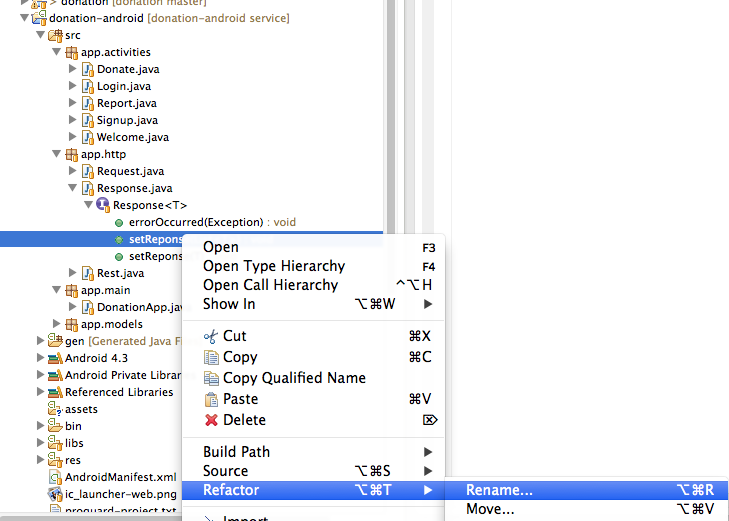
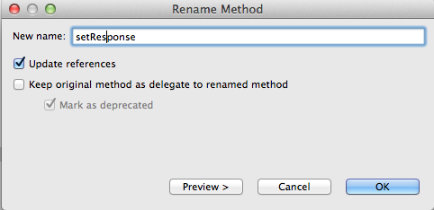

These are the completed labs from last week:
Publish the donation-service app to Cloudbees - and have the android app user that service instead of the locally hosted version.
You may have forgotten the steps for cloudbees deployment - but it involves:
.. and then make the following changes in the play project:
In dos/terminal, enter:
play install cloudbees
Edit app/dependenies.yaml and make following change:
require:
- play
- play -> cloudbees 0.2.2
Change into the donation-service folder and enter:
play deps
Comment out the in memory setup for the database:
#db=mem
.. and then bring in the setting for cloudbees:
db.url=jdbc:cloudbees://YOUR_DB_NAME
db.driver=com.mysql.jdbc.Driver
db.user=YOUR_DB_USER_NAME
db.pass=YOUR_DB_USER_PASSWORD
jpa.ddl=create
and in the same file, you cloudbees keys:
bees.api.key=YOUT_KEY
bees.api.secret=YOUR_SECRET
bees.api.domain=YOUR_DOMAIN
bees.api.name=YOUR_APP_NAME
The command to deploy the app is
play bees:app:deploy
The Rest class has local ip address hardcoded:
public class Rest
{
private static DefaultHttpClient httpClient = null;
//private static final String URL = "http://10.0.2.2:9000";
private static final String URL = "http://donation-edel020.edel020.cloudbees.net";
So replace it with your own cloudbees url (not the one above!)
The application as it currently stands uses two aspects of the donation play application:
See if you can figure out how to:
The facilities are already in the play app for this, so you will only be making changes to the android application.
Before working up to a solution to this, we might first introduce a new attribute in the DonationApp class:
public boolean donationServiceAvailable = false;
Every time we connect, we will set the last know status of our connection to the service here:/
Currently, the app loads the users from the service in the Login activity. This might not bee such a good idea. Lets move it to the welcome screen, so we will have preloaded the user list before starting the login activity:
package app.activities;
import java.util.List;
import app.donation.R;
import app.http.Response;
import app.main.DonationApp;
import app.models.DonationServiceAPI;
import app.models.User;
import android.app.Activity;
import android.content.Intent;
import android.os.Bundle;
import android.view.View;
import android.widget.Toast;
public class Welcome extends Activity implements Response<User>
{
DonationApp app;
@Override
public void onCreate(Bundle savedInstanceState)
{
super.onCreate(savedInstanceState);
setContentView(R.layout.activity_welcome);
app = (DonationApp) getApplication();
DonationServiceAPI.getUsers(this, this, "Retrieving list of users");
}
void serviceUnavailableMessage()
{
Toast toast = Toast.makeText(this, "Donation Service Unavailable. Try again later", Toast.LENGTH_LONG);
toast.show();
}
public void loginPressed (View view)
{
if (app.donationServiceAvailable)
{
startActivity (new Intent(this, Login.class));
}
else
{
serviceUnavailableMessage();
}
}
public void signupPressed (View view)
{
if (app.donationServiceAvailable)
{
startActivity (new Intent(this, Signup.class));
}
else
{
serviceUnavailableMessage();
}
}
@Override
public void setReponse(List<User> aList)
{
app.users = aList;
app.donationServiceAvailable = true;
}
@Override
public void errorOccurred(Exception e)
{
app.donationServiceAvailable = false;
serviceUnavailableMessage();
}
@Override
public void setReponse(User anObject)
{}
}
Read the above class carefully - and note how we make use of the `donationServiceAvailable' flag in DonationApp.
Login can now be simplified to its original form:
package app.activities;
import android.os.Bundle;
import android.app.Activity;
import android.content.Intent;
import android.view.View;
import android.widget.TextView;
import android.widget.Toast;
import app.donation.R;
import app.main.DonationApp;
public class Login extends Activity
{
@Override
protected void onCreate(Bundle savedInstanceState)
{
super.onCreate(savedInstanceState);
setContentView(R.layout.activity_login);
}
public void signinPressed (View view)
{
DonationApp app = (DonationApp) getApplication();
TextView email = (TextView) findViewById(R.id.loginEmail);
TextView password = (TextView) findViewById(R.id.loginPassword);
if (app.validUser(email.getText().toString(), password.getText().toString()))
{
startActivity (new Intent(this, Donate.class));
}
else
{
Toast toast = Toast.makeText(this, "Invalid Credentials", Toast.LENGTH_SHORT);
toast.show();
}
}
}
We will only be reaching this activity if we have successfully connected to the service.
This is a revised version of Signup, which makes use of the service:
package app.activities;
import java.util.List;
import android.os.Bundle;
import android.app.Activity;
import android.content.Intent;
import android.view.View;
import android.widget.TextView;
import android.widget.Toast;
import app.donation.R;
import app.http.Response;
import app.main.DonationApp;
import app.models.DonationServiceAPI;
import app.models.User;
public class Signup extends Activity implements Response<User>
{
private DonationApp app;
@Override
protected void onCreate(Bundle savedInstanceState)
{
super.onCreate(savedInstanceState);
setContentView(R.layout.activity_signup);
app = (DonationApp) getApplication();
}
public void registerPressed (View view)
{
TextView firstName = (TextView) findViewById(R.id.firstName);
TextView lastName = (TextView) findViewById(R.id.lastName);
TextView email = (TextView) findViewById(R.id.Email);
TextView password = (TextView) findViewById(R.id.Password);
User user = new User (firstName.getText().toString(), lastName.getText().toString(), email.getText().toString(), password.getText().toString());
DonationServiceAPI.createUser(this, this, "Registering new user", user);
}
@Override
public void setReponse(List<User> aList)
{
}
@Override
public void setReponse(User user)
{
app.users.add(user);
}
@Override
public void errorOccurred(Exception e)
{
app.donationServiceAvailable = false;
Toast toast = Toast.makeText(this, "Donation Service Unavailable. Try again later", Toast.LENGTH_LONG);
toast.show();
startActivity (new Intent(this, Welcome.class));
}
}
This should work now.
This takes a bit more work, and involved refactoring the donate button handler to only make the donation in the callback method:
package app.activities;
import java.util.List;
import app.donation.R;
import app.http.Response;
import app.main.DonationApp;
import app.models.Donation;
import app.models.DonationServiceAPI;
import android.os.Bundle;
import android.app.Activity;
import android.content.Intent;
import android.view.Menu;
import android.view.MenuItem;
import android.view.View;
import android.widget.RadioGroup;
import android.widget.NumberPicker;
import android.widget.ProgressBar;
import android.widget.TextView;
import android.widget.Toast;
public class Donate extends Activity implements Response<Donation>
{
private RadioGroup paymentMethod;
private ProgressBar progressBar;
private NumberPicker amountPicker;
private TextView amountText;
private TextView amountTotal;
private DonationApp app;
@Override
protected void onCreate(Bundle savedInstanceState)
{
super.onCreate(savedInstanceState);
setContentView(R.layout.activity_donate);
app = (DonationApp) getApplication();
paymentMethod = (RadioGroup) findViewById(R.id.paymentMethod);
progressBar = (ProgressBar) findViewById(R.id.progressBar);
amountPicker = (NumberPicker) findViewById(R.id.amountPicker);
amountText = (TextView) findViewById(R.id.amountText);
amountTotal = (TextView) findViewById(R.id.amountTotal);
amountPicker.setMinValue(0);
amountPicker.setMaxValue(1000);
progressBar.setMax(app.target);
}
@Override
public boolean onCreateOptionsMenu(Menu menu)
{
getMenuInflater().inflate(R.menu.donate, menu);
return true;
}
@Override
public boolean onOptionsItemSelected(MenuItem item)
{
switch (item.getItemId())
{
case R.id.menuReport : startActivity (new Intent(this, Report.class));
break;
case R.id.menuLogout : startActivity (new Intent(this, Welcome.class));
break;
}
return true;
}
public void donateButtonPressed (View view)
{
String method = paymentMethod.getCheckedRadioButtonId() == R.id.PayPal ? "PayPal" : "Direct";
int donatedAmount = amountPicker.getValue();
if (donatedAmount == 0)
{
String text = amountText.getText().toString();
if (!text.equals(""))
donatedAmount = Integer.parseInt(text);
}
if (donatedAmount > 0)
{
DonationServiceAPI.createDonation(this, this, "Registering new donation...", new Donation(donatedAmount, method));
}
}
@Override
public void setReponse(Donation acceptedDonation)
{
Toast toast = Toast.makeText(this, "Donation Accepteed", Toast.LENGTH_SHORT);
toast.show();
app.newDonation(acceptedDonation);
progressBar.setProgress(app.totalDonated);
String totalDonatedStr = "$" + app.totalDonated;
amountTotal.setText(totalDonatedStr);
amountText.setText("");
amountPicker.setValue(0);
}
@Override
public void errorOccurred(Exception e)
{
Toast toast = Toast.makeText(this, "Donation Service Unavailable. Try again later", Toast.LENGTH_LONG);
toast.show();
}
@Override
public void setReponse(List<Donation> aList)
{}
}
The donation-android app has an unfortunate type in the name of the Response interface methods:
public interface Response<T>
{
public void setReponse(List<T> aList);
public void setReponse(T anObject);
public void errorOccurred (Exception e);
}
Missing an 's' on setReponse!
Changing this will cause errors throughout our activities - however, there is a way to change this and have all the activities changed automatically. This is to use the Eclipse 'refactorring' menu options.
This needs to be accessed via eclipse package explorer view:
 
Do this for both methods. If you get warning - press "continue" anyway.
If all goes according to plan, it should successfully rename all relevant artifacts.
Archive of the lab so far:
Does it make sense to download the full list of users when we load the Welcome activity? Perhaps it might be better if we just attempted to reach donation-service, and indicate to the user if it is available or not.
Consider how you might do this.
When Login is launched, it might be better to just check that the user supplied credentials are valid - with the donation-service app, and not by inspecting our local list of users.
How would this be done?
In the Singup activity - we should really check to see if the new user email is not already taken.
How would we do this?